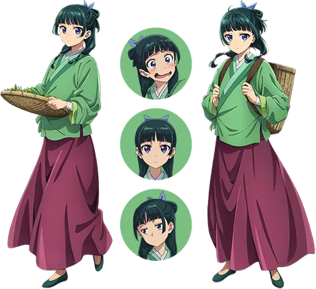

Image indisponible
Le reste de la fiche reste utilisable.
Le reste de la fiche reste utilisable.
Apothicaire
Maomao
猫猫 マオマオ
Novel / recherche : Maomao / Mao Mao
L’héroïne. Apothicaire élevée dans le quartier des plaisirs, passionnée par les médicaments et surtout les poisons.